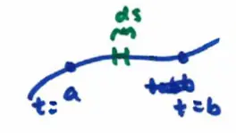

17.2 (part 1) Line Integrals of Functions
Line integral: evaluation / accumulation of a function along a curve.
\[ \int_{C} f(x,y) \, ds \]
Where:
- \( C \): the curve
- \( ds \): length of a small segment of curve
\( ds \): we get from length:

\[ \int_{a}^{b} |\vec{r}'(t)| \, dt \]
length of small segment: \( ds = |\vec{r}'(t)| \, dt \)
In fact, length of curve is a special case of line integral with \( f(x,y) = 1 \):
\[ \int_{C} ds = \int_{a}^{b} |\vec{r}'(t)| \, dt \]
In 3D, \[ \int_{C} f(x,y,z) \, ds \]